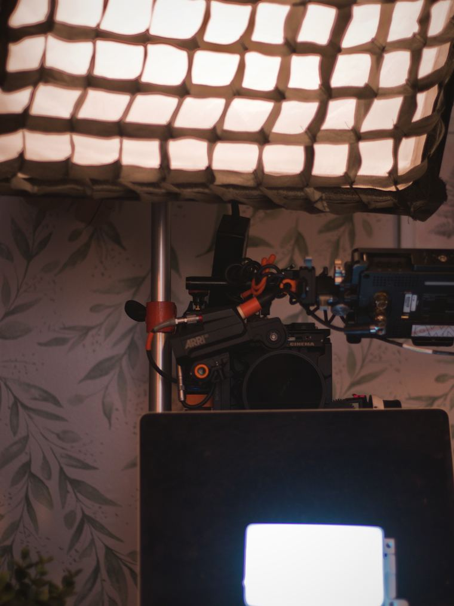

Press
Copy-ready material for journalists, programmers and festivals. Anything not here, please ask.
Logline
When a young woman suspects her boyfriend is cheating, she and her tech-savvy best friend turn into digital detectives, accidentally uncovering more than they bargained for.
Synopsis
Nikita is twenty-nine and almost certain her boyfriend is lying to her. Her best friend Temi has a laptop, a corkboard and no sense of proportion. Over one escalating day the two of them turn a bedroom into a detective headquarters, and find out how far a friendship will go on very little evidence.
A hyper-stylised comedy short built on split screens, rapid-fire monologues and montage. In tone, Only Murders in the Building meets Broad City.
Fact sheet
- Title
- Overthinking It
- Format
- Comedy short
- Directed by
- Lisa Geurts
- Written and produced by
- Ayo Hana
- Cast
- Ayo Hana (Temi), Anita Karunasaagarar (Nikita), Richard McIver (Liam)
- Cinematography
- Oliver Newman
- Music
- Ellahe, Julz West
- Banner
- JoyTown Productions
- Shot
- November 2025, London
- Status
- In post-production
- Target
- 2027 international festival run
- @overthinkingit.film
Imagery
Graded frames from the film, production photography, the lighting plan and cast and crew photographs are available at full resolution on request.
Please credit the production and do not crop or recolour without asking.
Press enquiries: @overthinkingit.film
